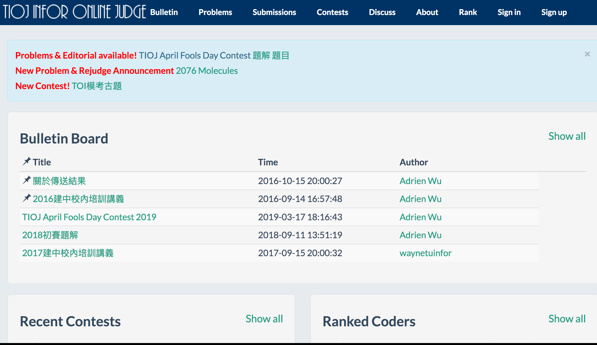

我開始接觸程式設計是在高中一年級的電腦課，老師教我們C++的基本操作
雖然說上課內容很簡單、基本，但也因此開啟了我對程式設計的興趣


高二下的時候報名參加了資訊校隊補選
雖然沒有入選，不過因為這次的參賽認識到了TIOJ這個解題網站
從那之後只要有空就會寫寫放在上面的演算法題目
在高三的時候還曾經成為網站上解題數的第一名(現在帳號刪掉了)
高三的時候成功入選建中的資訊校隊
並通過入營考，進入資訊奧林匹亞的培訓營
可惜止步於第一階段培訓


上了大學之後還是有持續在寫程式
主要是在codeforces上面打contest
GCJ、codechef、atcoder上面的比賽也常常參加
值得一提的大概就是去年在codechef辦的snackdown上贏得了一件T-shirt